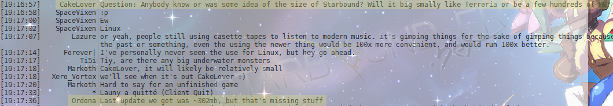

Il est extra !! Jsuis content de voir que le thème des Dinosaures est récurrent ! Les dinos, en monstres de compagnie, SAKLAK !
Waoh, super sympa ! C'est pas souvent qu'on voit des quadrupèdes :3
+1 Bibi ! J'aime beaucoup ce monstre :)
La taille actuelle du jeu serait de l'ordre de 300Mb (objets manquants). Source : IRC officiel.

C'est un ordre de grandeur convenable pour ce genre de jeu. En tout cas, on sent l'approche de la première " version " officielle du jeu.
Sympa et dans un style bien différent de d'habitude, et ce n'est pas plus mal :)
En effet, il ne ressemble pas aux anciens. Il est beau mais je ne le préfère pas à ces derniers.
![[Image: andrekentwall-1024x768.jpg]](http://playstarbound.com/wp-content/uploads/2013/04/andrekentwall-1024x768.jpg)